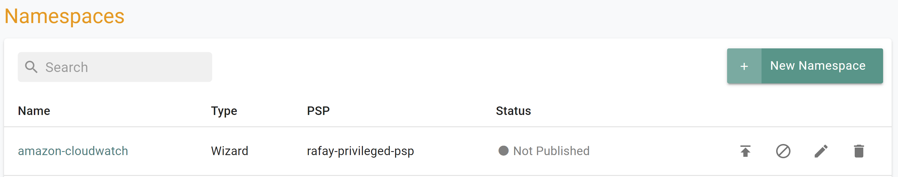
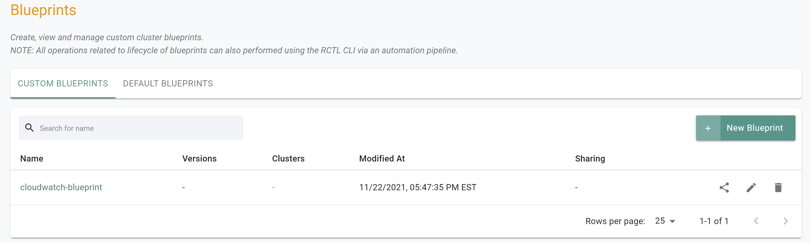

What Will You Do
In this part of the self-paced exercise, you will create a custom cluster blueprint with a Amazon CloudWatch Agent add-on, based on declarative specifications.
Step 1: Create Repository
In this step, you will create a repository in your project so that the controller can retrieve the Helm charts automatically.
- Open Terminal (on macOS/Linux) or Command Prompt (Windows) and navigate to the folder where you forked the Git repository
- Navigate to the folder “
/getstarted/cloudwatch/repository”
The “cloudwatch-repository.yaml” file contains the declarative specification for the repository. In this case, the specification is of type “Helm Repository” and the “endpoint” is pointing to the AWS Github repository that includes the CloudWatch Helm chart.
apiVersion: config.rafay.dev/v2
kind: Repository
metadata:
name: cloudwatch-repo
spec:
repositoryType: HelmRepository
endpoint: https://aws.github.io/eks-charts
credentialType: CredentialTypeNotSetType the command below
rctl create repository -f cloudwatch-repository.yamlIf you did not encounter any errors, you can optionally verify if everything was created correctly on the controller.
- Navigate to the “defaultproject” project in your Org
- Select Integrations -> Repositories

Step 2: Create Namespace
In this step, you will create a namespace for the Cloudwatch agent. The “cloudwatch-namespace.yaml” file contains the declarative specification
The following items may need to be updated/customized if you made changes to these or used alternate names.
value: cloudwatch-cluster
kind: ManagedNamespace apiVersion: config.rafay.dev/v2 metadata: name: amazon-cloudwatch description: namespace for Amazon Cloudwatch labels: annotations: spec: type: RafayWizard resourceQuota: placement: placementType: ClusterSpecific clusterLabels: - key: rafay.dev/clusterName value: cloudwatch-clusterOpen Terminal (on macOS/Linux) or Command Prompt (Windows) and navigate to the folder where you forked the Git repository
Navigate to the folder “
/getstarted/cloudwatch/namespace” Type the command below
rctl create namespace -f cloudwatch-namespace.yaml
If you did not encounter any errors, you can optionally verify if everything was created correctly on the controller.
- Navigate to the “defaultproject” project in your Org
- Select Infrastructure -> Namespaces
- You should see an namesapce called “amazon-cloudwatch”

Step 3: Create Addon
In this step, you will create a custom addon for the Cloudwatch Agent. The “cloudwatch-addon.yaml” file contains the declarative specification
If you plan to use a different name for the cluster other than “cloudwatch-cluster”, you must update the “custom-values.yaml” file located in the folder “
The following details are used to build the declarative specification.
- “v1” because this is our first version
- The addon is part of the “defaultproject”
- Name of addon is “cloudwatch-addon”
- The addon will be deployed to a namespace called “amazon-cloudwatch”
- You will be using a custom “custom-values.yaml as an override which is located in the folder “
/getstarted/cloudwatch/addon” - The “aws-cloudwatch-metrics” chart will be used from the previously created repository named “cloudwatch-repo”
The following items may need to be updated/customized if you made changes to these or used alternate names.
repository_ref: “cloudwatch-repo”
kind: AddonVersion metadata: name: v1 project: defaultproject spec: addon: cloudwatch-addon namespace: amazon-cloudwatch template: type: Helm3 valuesFile: custom-values.yaml repository_ref: cloudwatch-repo repo_artifact_meta: helm: chartName: aws-cloudwatch-metricsOpen Terminal (on macOS/Linux) or Command Prompt (Windows) and navigate to the folder where you forked the Git repository
Navigate to the folder “
/getstarted/cloudwatch/addon” Type the command below
rctl create addon version -f cloudwatch-addon.yaml
If you did not encounter any errors, you can optionally verify if everything was created correctly on the controller.
- Navigate to the “defaultproject” project in your Org
- Select Infrastructure -> Addons
- You should see an addon called “cloudwatch-addon”

Step 4: Create Blueprint
In this step, you will create a custom cluster blueprint with the CloudWatch addon. The “cloudwatch-blueprint.yaml” file contains the declarative specification.
- Open Terminal (on macOS/Linux) or Command Prompt (Windows) and navigate to the folder where you forked the Git repository
- Navigate to the folder “
/getstarted/cloudwatch/blueprint”
The following items may need to be updated/customized if you made changes to these or used alternate names.
project: “defaultproject”
kind: Blueprint metadata: # blueprint name name: cloudwatch-blueprint #project name project: defaultprojectType the command below
rctl create blueprint -f cloudwatch-blueprint.yaml
If you did not encounter any errors, you can optionally verify if everything was created correctly on the controller.
- Navigate to the “defaultproject” project in your Org
- Select Infrastructure -> Blueprint
- You should see an blueprint called “cloudwatch-blueprint

New Version
Although we have a custom blueprint, we have not provided any details on what it comprises. In this step, you will create and add a new version to the custom blueprint. The YAML below is a declarative spec for the new version.
The following items may need to be updated/customized if you made changes to these or used alternate names.
- project: “defaultproject”
- blueprint: “cloudwatch-blueprint”
- name: “cloudwatch-addon”
version: “v1”
kind: BlueprintVersion metadata: name: v1 project: defaultproject description: Amazon CloudWatch Agent spec: blueprint: cloudwatch-blueprint baseSystemBlueprint: default baseSystemBlueprintVersion: "" addons: - name: cloudwatch-addon version: v1 # cluster-scoped or namespace-scoped pspScope: cluster-scoped rafayIngress: true rafayMonitoringAndAlerting: false kubevirt: false # BlockAndNotify or DetectAndNotify driftAction: BlockAndNotifyType the command below to add a new version
rctl create blueprint version -f cloudwatch-blueprint-v1.yaml
If you did not encounter any errors, you can optionally verify if everything was created correctly on the controller.
- Navigate to the “defaultproject” project in your Org
- Select Infrastructure -> Blueprint
- Click on the “cloudwatch-blueprint” custom cluster blueprint

Recap
As of this step, you have created a “cluster blueprint” with the CloudWatch agent as one of the addons. You are now ready to move onto the next step where you will provision an EKS cluster with this custom cluster blueprint.
Note that you can also reuse this cluster blueprint for as many clusters as you require in this project and also share the blueprint with other projects.